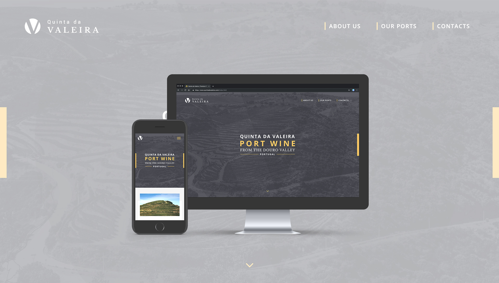
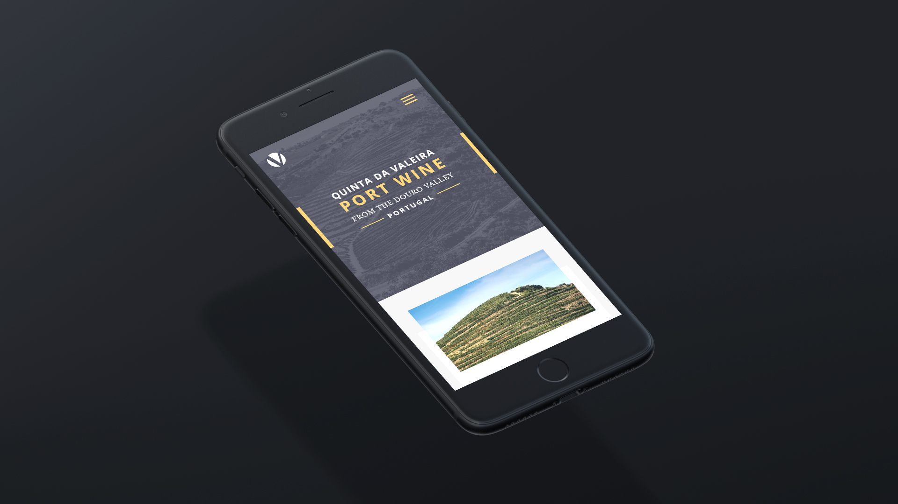
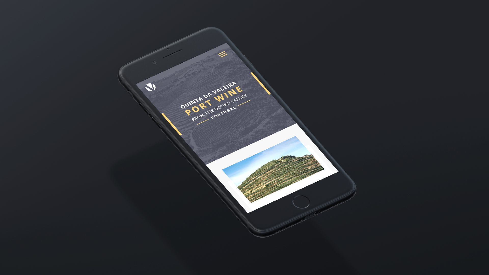
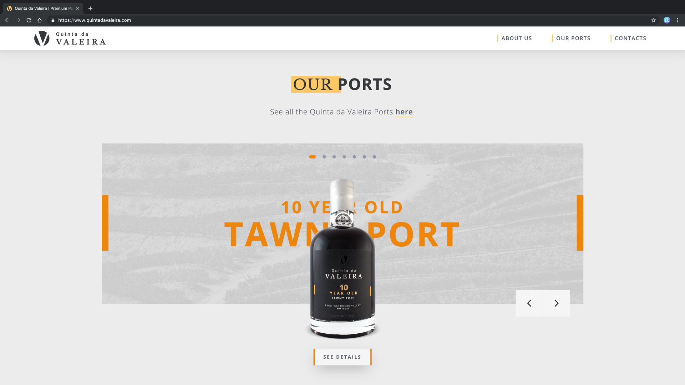
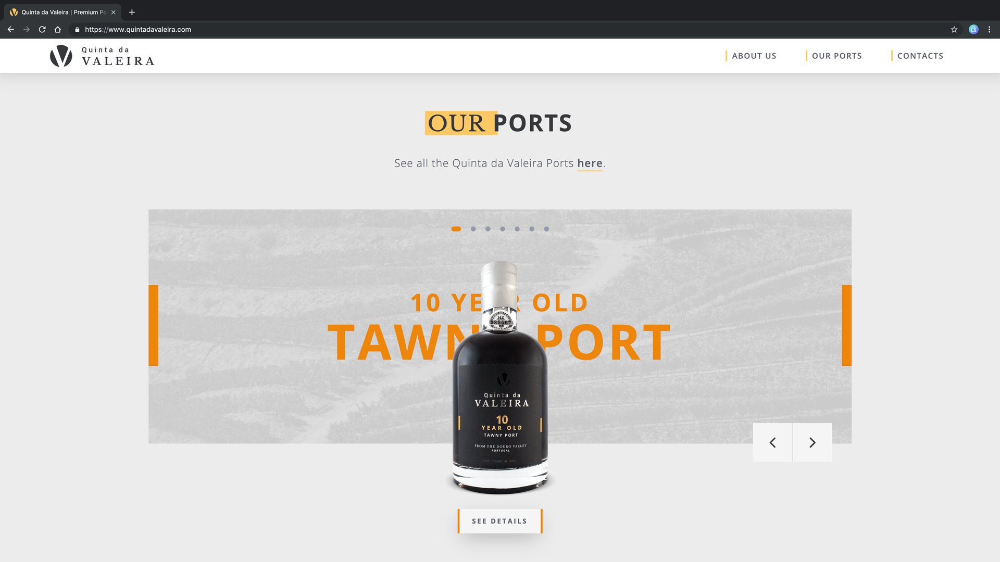
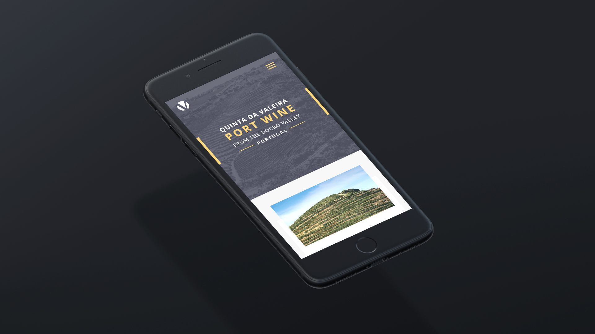
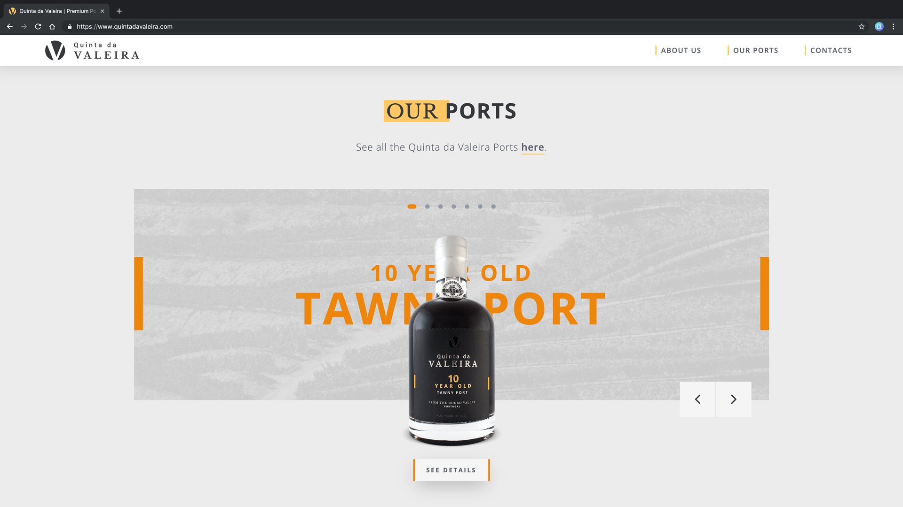

Quinta da Valeira
2018 /Label Design & Branding /Client: Vinoquel
I was responsible for the concept, reponsive User Interface Design, front-end
development and SEO of Quinta da Valeira's website.
UX done with the help of João Cortez.
Software and languages used:
- Figma
- Photoshop
- Invision
- HTML5, SASS, Vanilla JS (basic)
- Chrome DevTools
- GitHub
- FileZilla
- Google Analytics
- SEO

 

 





go back
back to top